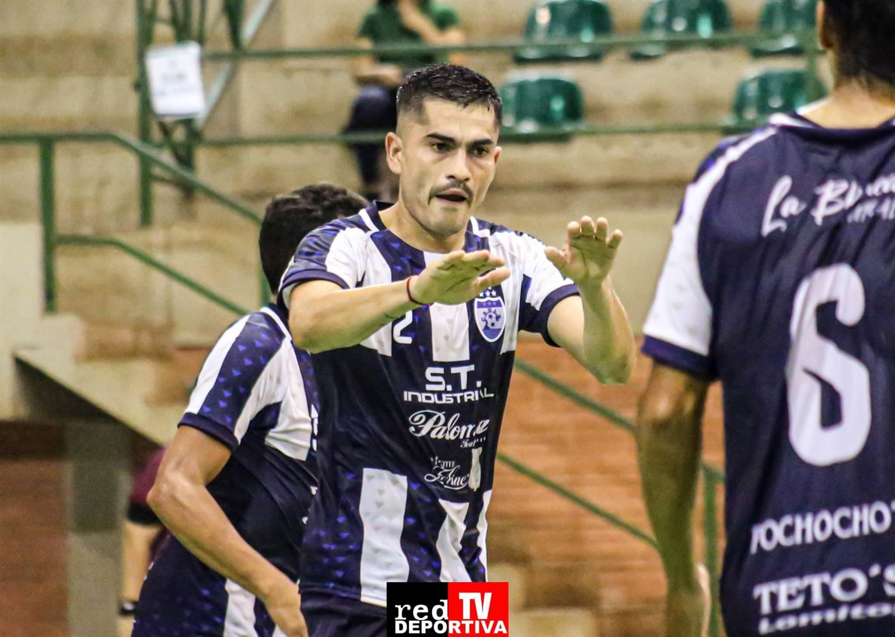
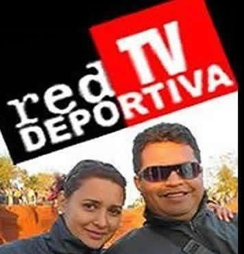

Cobertura actual
Futsal Paranaense
Seguimos el torneo partido a partido: resúmenes, goles y fotos en nuestras redes.
Ver coberturaFutsal · Fútbol de salón
RedDeportivaTV cubre los torneos que importan con fotografía deportiva, videos resumen y transmisiones en vivo.

Quiénes somos
RedDeportivaTV nace del amor por el fútbol y el futsal. Estamos en la cancha para contar lo que pasa: los goles, las atajadas, los festejos y el esfuerzo de cada equipo.
Hacemos fotografía deportiva, videos resumen de partidos y transmisiones en vivo con narración, para que jugadores, clubes y familias puedan revivir cada partido.

Cobertura actual
Seguimos el torneo partido a partido: resúmenes, goles y fotos en nuestras redes.
Ver coberturaEn YouTube
Fotografía deportiva
Campeonatos y coberturas
Servicios
Fotos de acción, goles, atajadas, festejos y planteles, listas para compartir en redes.
Videos con las mejores jugadas y goles de cada partido, editados para YouTube, Facebook y TikTok.
Partidos y finales transmitidos en directo para que nadie se pierda el juego.
Relato deportivo y seguimiento completo de torneos, desde la primera fecha hasta la premiación.
Contratación
Consultá para cobertura de torneos, partidos y eventos deportivos.
Escribinos por WhatsApp